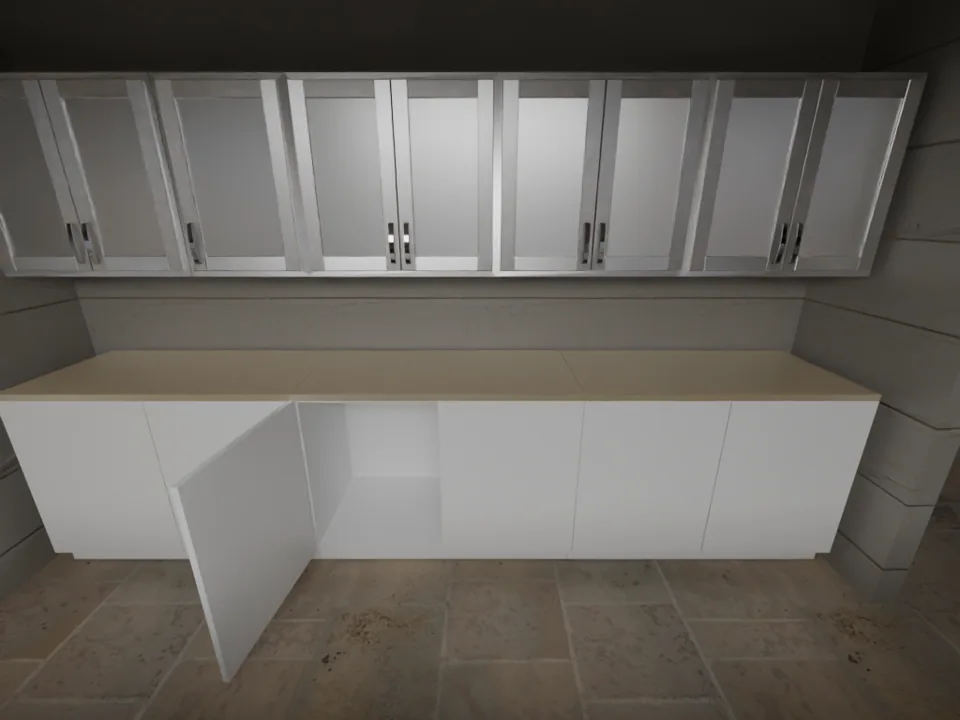
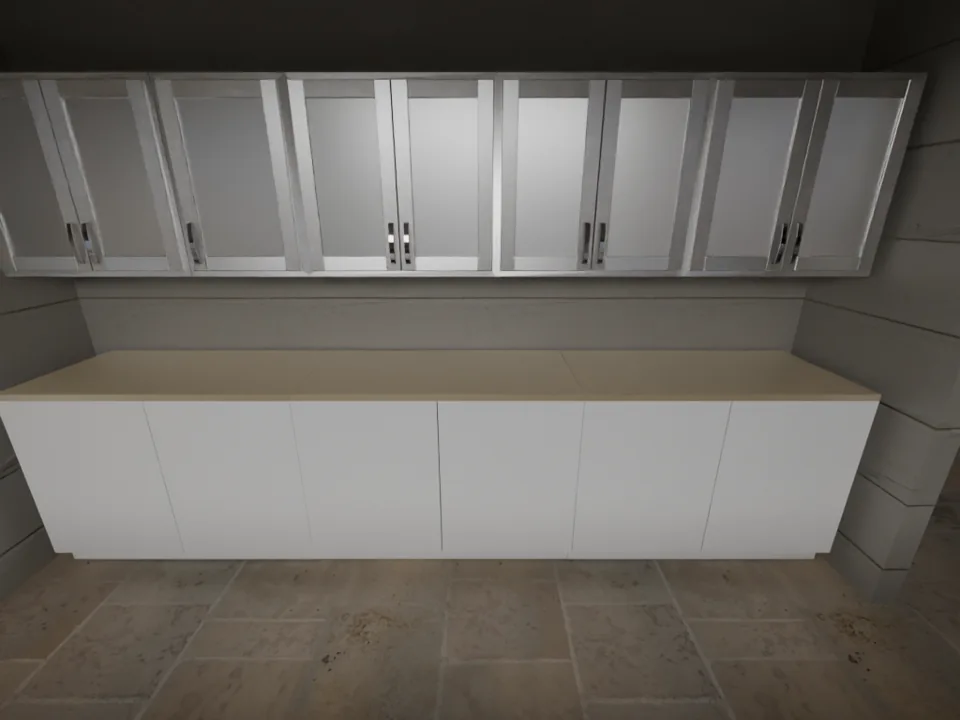

Single relation
Establish observed endpoints and their change.
Spatial reasoning under physical actions
Understand what changes.
Remember what still holds.
Moving an object can change its distance to a table while leaving it supported by the floor. A collision can move a second object while the rest of the room stays in place.
Selective spatial relation reasoning means establishing the relation at both endpoints, then distinguishing change from preservation within—and outside—the action’s participation scope.
RAVEL represents scenes, actions, dependencies, and evidence in code. A training-free harness executes this representation and works with a frozen vision-language model to compose complete relational answers.
 View full size ↗
View full size ↗Spatial premises across actions · Paper Figure 1. One action produces changed, rechecked-preserved, and unrelated-preserved relations. The three reasoning paths illustrate mechanisms.
Indoor scenes from HSSD and Infinigen, executed physical actions, two synchronized views per state, and traceable relation labels.


Drag the divider to compare recorded before and after views of the same episode.
 View full size ↗
View full size ↗Dataset overview · Paper Figure 2. Image availability is task-dependent; future states for prediction and candidate-edit tasks are reserved for evaluation.
Establish observed endpoints and their change.
Predict future relations from initial views and an action.
Track multiple relations and both kinds of preservation.
Select every edit that achieves goals and preserves constraints.
Maintain consistent answers across four to six states.
Dataset scale follows the supplied manuscript. The full downloadable release will be linked here when available; this page provides recorded visual examples.
Relation-Aware Validity and Evidence Linking maintains a persistent spatial representation with executable state updates, validity checks, relation evaluation, and answer composition.
 View full size ↗
View full size ↗Shared harness execution · Paper Figure 3. C00 and C11 run the same stages; P/L switches control compulsory adoption of computed and eligible carried-over findings. Committed evidence carries forward to the next scheduled state.
Compile public recipes, actions, and queries into spatial code. Retain or propagate supported attributes, and invalidate current geometry after unsupported motion.
Compute relations from valid geometry, retain eligible fixed-object evidence, and ask the frozen VLM for fresh judgments. Optional P/L binding makes established findings compulsory.
Validate and commit typed findings with their sources. Combine endpoints and shared participation into change, preservation, and admissible edits; carry the evidence to the next state.
Different endpoint truth values.
A participant moves or is controlled; the relation persists.
The relation persists outside the interaction scope.
The full configuration improves whole-question accuracy by 13.35–19.80 percentage points. Matched controls examine shared representation and execution, followed by optional evidence binding.
Spatial state, validity tracking, relation evaluation, and composition remain active when binding is off. P/L binding then controls whether the model must adopt applicable findings.
Where the gains arise · Paper Figure 4. The shared-harness, binding, and propagation contrasts use different reference configurations; their gains are not additive.
 View full size ↗
View full size ↗Whole-question accuracy requires every semantic item to be correct. High item accuracy can still leave complete multi-state answers unresolved.
With binding disabled, Qwen rises from 6.20% to 21.60% Whole; Astra rises from 78.00% to 80.00%. Enabling P/L binding adds 2.80 and 0.20 points, respectively.
Retained evidence may remain applicable yet preserve an initial error. Unsupported physical outcomes still require fresh model judgments.
 View full size ↗
View full size ↗Evidence retention and visual detail · Paper Figure 5. Evidence-age caps use 100 T5 trajectories; resolution tests use 500 questions. Changes are relative to unlimited history and a 1,024-pixel long edge, respectively.
Two Astra trajectories show how propagated geometry and fresh visual judgments establish different kinds of relations.
 View full size ↗
View full size ↗Spatial computation and visual judgment · Paper Figure 6. Left: propagated centers track A–C proximity. Right: RAVEL detects B–floor support after tray rotation while Direct misses the change. Display crops are enhanced; inference uses both original views.
The harness compiles public declarations into a persistent spatial representation. A fixed interpreter updates state, checks validity, evaluates supported relations, and composes answers. The frozen model reads code and permitted views to supply unresolved judgments.
Code release pending. The current paper describes spatial declarations, action-dependent validity, evidence organization, optional P/L binding, and answer composition.
Read the current paper# A scene retains origins and current validity.
scene.object("A",
origin={...},
current_geometry=None)
# Public declarations structure the context.
SceneSpec # objects, frames, attributes
ActionProgram # prescribed edits and actions
queries # predicates and dependencies
evidence # findings, sources, validity
# Execute → complete → commit → compose
# Unsupported geometry stays unresolved.